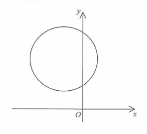

Circle · centre in Quadrant II
In the figure, the radius of the circle and the coordinates of the centre are $r$ and $(h,k)$ respectively. Which of the following are true?

The centre $C(h,k)$ lies in Quadrant II, i.e. to the left of the $y$-axis and above the $x$-axis. Also the radius is positive.
$$\Rightarrow\quad h<0,\qquad k>0,\qquad r>0$$
This is the key information — every claim below is decided by this one fact plus the fact that the circle does not cross the axes.
The circle does not reach either axis (the axes are outside the circle), so the distance from $C$ to each axis is smaller than $r$:
| Distance from $C(h,k)$ to… | Value | Condition |
|---|---|---|
| $y$-axis (vertical line $x=0$) | $-h$ | $-h<r\;\Rightarrow\; h>-r$ …(1) |
| $x$-axis (horizontal line $y=0$) | $k$ | $k<r\;\Rightarrow\; k>r$ is FALSE, so $k<r$ …(2) |
From (1): $h>-r$. From (2): $k
Combine (1) and (2): $-h
Instead: from the figure $k>0$ and $h<0$, but we must compare $-h$ with $k$. Since the circle is not cut by either axis, the horizontal offset $-h$ satisfies $-h Using (1) $h>-r$ and $k $$0-h Adding $h>-r$ to $k>0$ is not valid. The correct reasoning: the centre is outside the "negative" region, and since $-h
Since $r>0$ and $h<0$, we have $-h>0$. Hence
$$r-h=r+(-h)>0 \quad\checkmark$$
Claim II is TRUE ✓ — a positive number minus a negative number is always positive.
From the figure/condition (2), the distance from $C$ to the $x$-axis is $k$, and the circle does not cross the $x$-axis, so $k In the figure the bottom of the circle is still above the $x$-axis, meaning $k$ (the height of the centre) is greater than $r$? No. The lowest point is at height $k-r>0$, so $k>r$. $$\Rightarrow\; r-k<0 \quad\Rightarrow\;$$ Claim III is FALSE ✗
Only claims I and II are true.
Question. The circle \(C:(x-h)^{2}+(y-k)^{2}=r^{2}\) has its centre in Quadrant IV and does not cut either coordinate axis. Which of the following must be true? I. \(h>r\) II. \(k<-r\) III. \(h+k<0\)